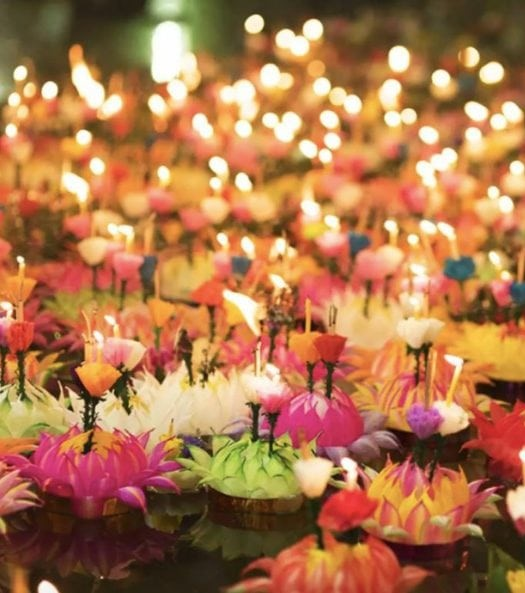

|  | Event Name | Loy Krathong festival |
|---|---|---|
| What is Loy Krathong? | Loy Krathong Festival is an annual traditional Siamese festival celebrated by Thais to pay respect to the Goddess of Water and the Buddha. It is not a public holiday but is celebrated nationwide when people gather around lakes, rivers, and canals to release floating lanterns or Krathongs on waterways. | |
| When is Songkran Festival? | Loy Krathong or Loi Krathong (ลอยกระทง), known as Thailand's Festival of Lights, is one of the biggest festivals in Thailand. In 2024, it will take place on November 16th. |